来源：https://aiawaken.feishu.cn/docx/A1tZdXQ3CoiPCXxArsAckuX2ngf
不知不觉，从去年 6 月开始转行做一人 AI 公司，到 11 月正式 AI 创业快 1 年了，
经常有朋友问：
你如何这么快适应一个新领域的？
你是如何这么快知道小红书，公众号，视频号的流量规则或者变现方式的？
你从哪里知道这么多的副业项目，变现方式的。
先说结论：一个公式
AI+优质信息源（input） = What \why \how（output）
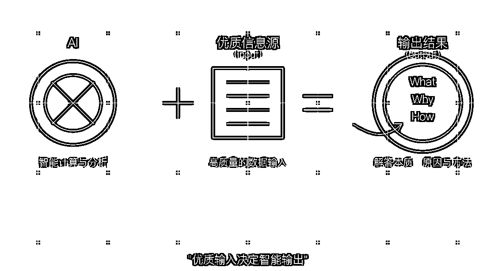
今天的文章希望对大家有一些启发。
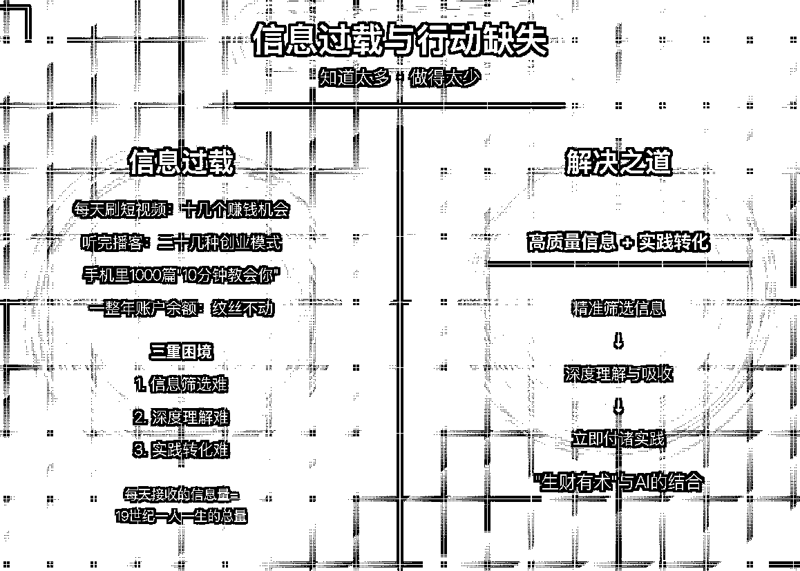
之前我每天刷完短视频，就有十几个赚钱机会。
听完播客，又有二十几种创业模式。
但一整年下来，我的账户余额却纹丝不动。
这就是信息过载。算法让我注意力停留在看了世界这么大，可我依旧一贫如洗。
信息太多，行动太少。手机里存了 1000 篇"10 分钟教你月入 10 万"的文章，却连第一步都迈不出去。
数据显示，我们平均每天接收的信息量相当于 19 世纪一个人一生接收的总量。
而我们的大脑处理能力却没有同步提升。
这就造成了三重困境：
尤其在赚钱领域，这种困境更为明显。
朋友小林曾花 5000 元报了个"AI 写作赚钱课"，结果发现课程内容 80%都能在公开渠道免费获取。
这是信息差，更是认知差。
随着我对认知差的理解加深，一个问题始终萦绕在我脑海：
有没有一种方法，能让我既获取高质量信息，又能快速理解并付诸实践？
答案在"生财有术"和 AI 的结合中找到了。
第一次听说"生财有术"，是 2024 年 7 月的 《人人玩转 ChatGPT》作者黄小刀告诉我，
"那里汇集了 6.7 万人，每天都在分享实战赚钱经验。"她这样介绍。
起初我并不以为然。互联网上教人赚钱的平台太多了，大多是"卖铲子的比挖金者更赚钱"的游戏。
直到我真正加入，才明白它的与众不同。
生财有术不是简单的知识付费平台，而是一个完整的赚钱信息生态：
一个圈友"紫菜"的故事让我印象深刻：他通过从生财有术挑选优质项目，
交给团队去复制执行，每个项目基本能实现七位数收入。
这就是生财有术的核心价值：信息筛选和信心支持。
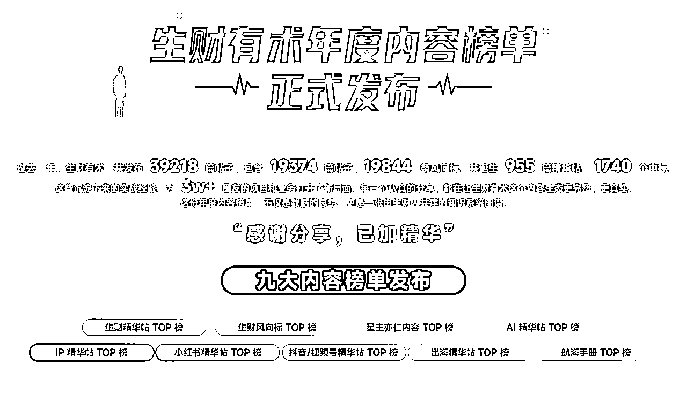
但问题来了，生财有术内容量如此庞大，从哪里下手？
如何在短时间内学习吸收？每天除了本职工作，我能挤出的时间不过 2-3 小时。
这时，AI 成了我的秘密武器。
首先，我明确了 AI 学习的三大原则：
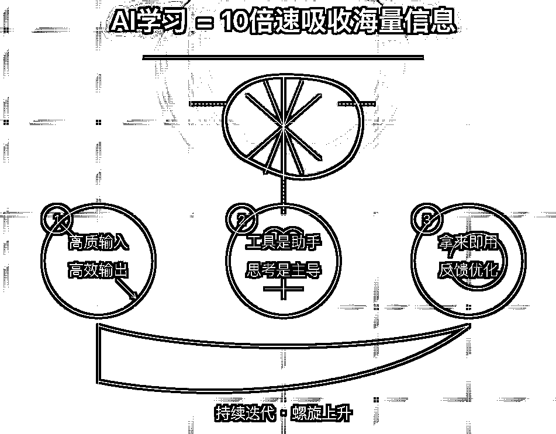
然后，我搭建了自己的 AI 学习生财，核心是三个模块：
生财有术的内容实在太多，单靠人力根本看不完。我用 AI 帮我智能筛选和总结。
比如分类：我用这个方法处理了生财有术《生财使用指南》的使用手册，20 分钟内就掌握了核心玩法和注意事项。相比之下，我的一个朋友花了整整一周才看完。
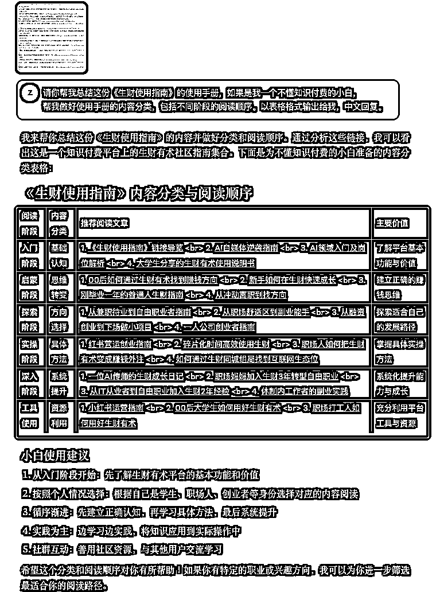
再比如筛选：小红书的垂直内容
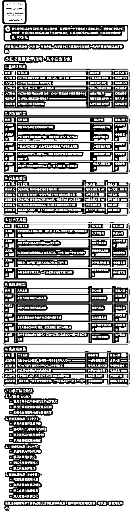
内容筛选只是第一步，更重要的是深度理解。
我设计了一套"费曼学习法+AI"的组合拳：
本质就是给自己拉通一个刻意练习的老师，快速理解和对齐陌生知识的卡点。、
比如：
知识不转化为行动，等于零。
我用 AI 帮我：
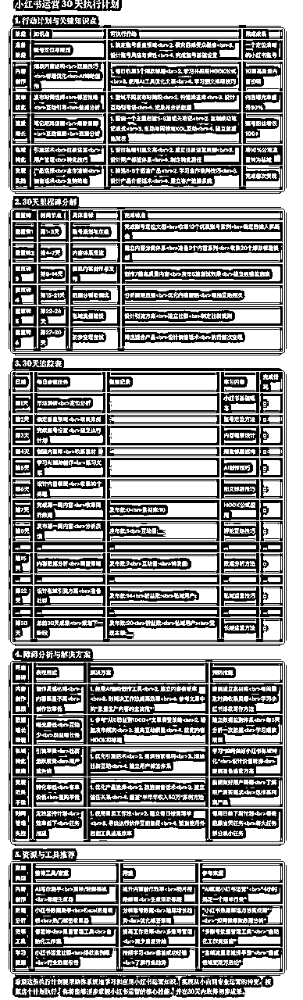
执行过程中，我每天反馈执行情况，AI 根据反馈调整计划。一个月后，我成功将 5 个小红书账号从 0 粉丝增长到平均 500+，其中一个账号还获得了小红书官方推荐。可能不明显，但比摸不到头脑和长期 100 流量好得多。
传统学习：看 10 篇文章→理解 70%→记住 30%→实际用上 10%
AI 学习：看 1 篇精华帖→理解 90%→记住 60%→实际用上 40%
过去一年，我通过 AI+生财有术的方式，成功启动了 3 个副业项目，
月增收 25000+元。（公众号爆文，代写，小绿书引流）案例：
输入
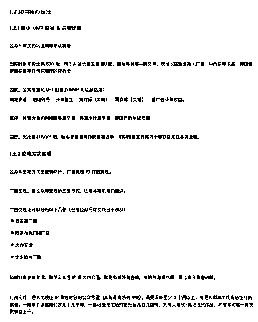
得出：
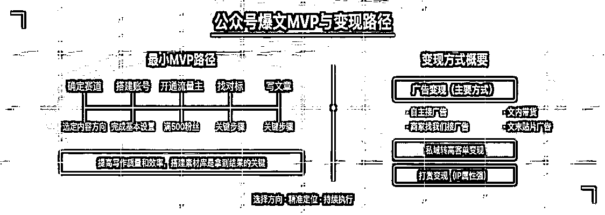
输入：航海手册《生财思维课之 MVP 思维》
得出：
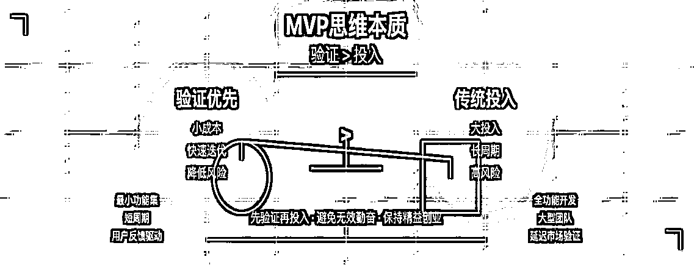
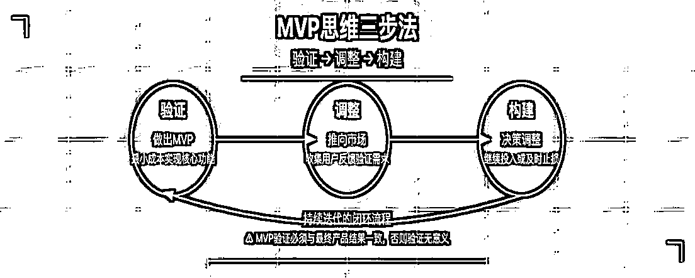
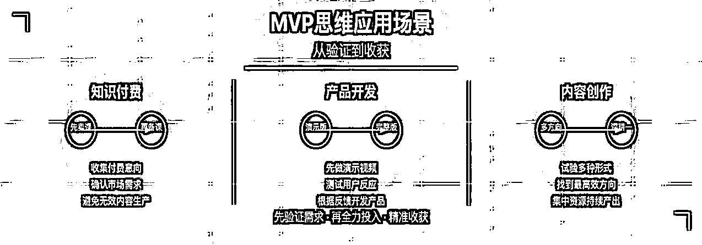
输入：
输入：
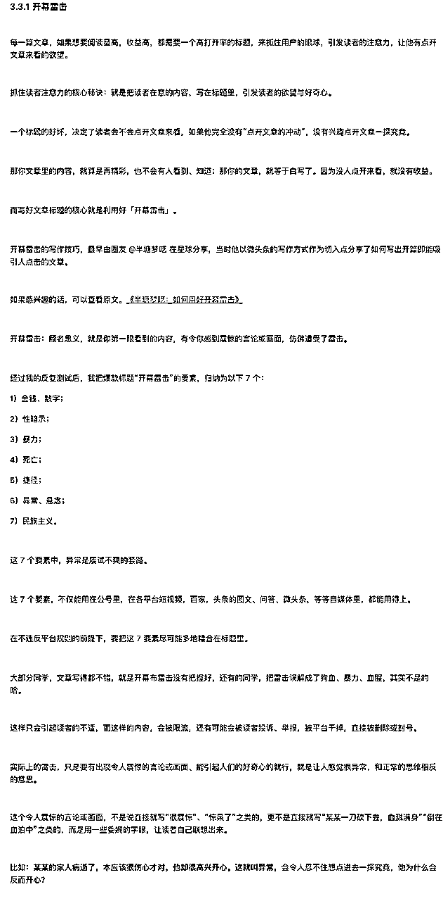
提示词：
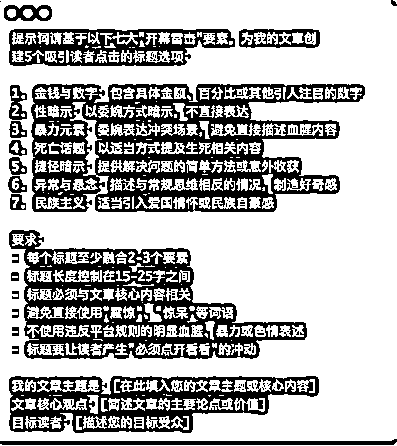
效果：
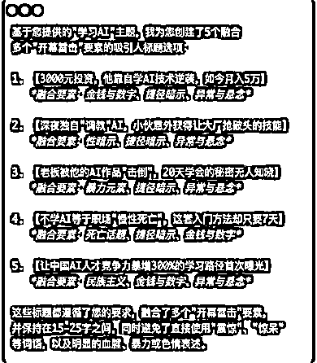
传统学习模式是线性的：接收信息→记忆信息→应用信息。
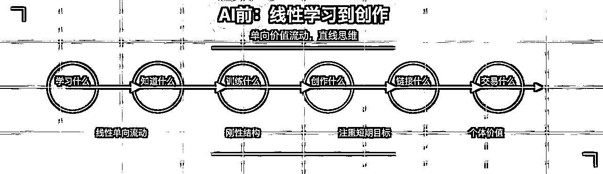
AI+生财模式（优质信息源）是网状的：提问→获取答案→提炼模型→应用→反馈→迭代。
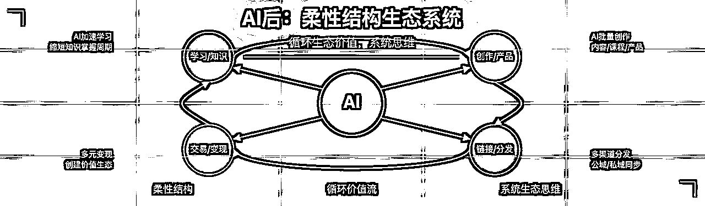
通过这种方式，我不再是信息的被动接收者，而是知识的主动构建者。
AI 也不是取代思考，而是帮我更高效地思考。从信息→知识→智慧的转化过程中，AI 是强大的催化剂。
随着我对 AI 运用和生财有术的深入学习，
我也开始从单纯的知识消费者转变为分享者。
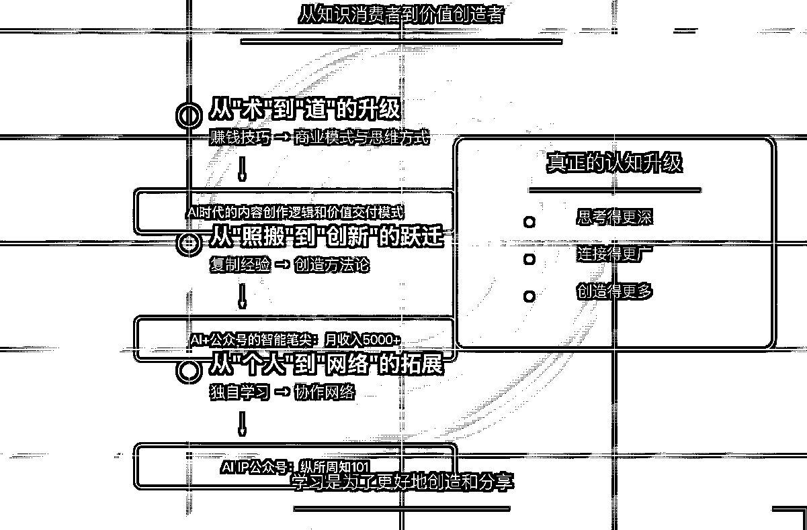
这个过程中，我发现了三个关键转折点：
最初，我只关注具体的赚钱技巧（术）。 现在，我更注重商业模式和思维方式（道）。
例如，我不再只关注"如何用 AI 写爆款文案"，而是思考"AI 时代的内容创作逻辑和价值交付模式"。
开始阶段，我只是复制别人的成功经验。 现在，我能融合多领域知识，创造自己的方法论。
我将生财有术中学到的公众号爆文运营经验与 AI 自动化技术结合，开发出了一套"AI+公众号的工具"的智能笔尖，这这个产品已经帮助我的一些朋友实现了每月 5000+的副业收入。
地址：https://aiawaken.top/dc/v53e930y
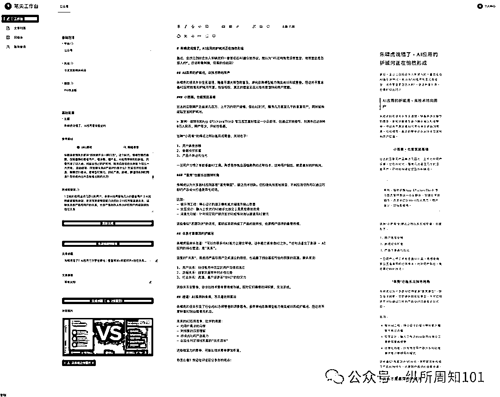
初期，我只是独自学习和实践。 现在，我开始链接资源，形成协作网络。
用在生财的输出文章的思路开始做自己 AI Ip 公众号：纵所周知 101
这三个转折点让我明白：
真正的认知升级不是知道得更多，而是思考得更深、连接得更广、创造得更多。
这就是，我说的觉醒学习模型运用。
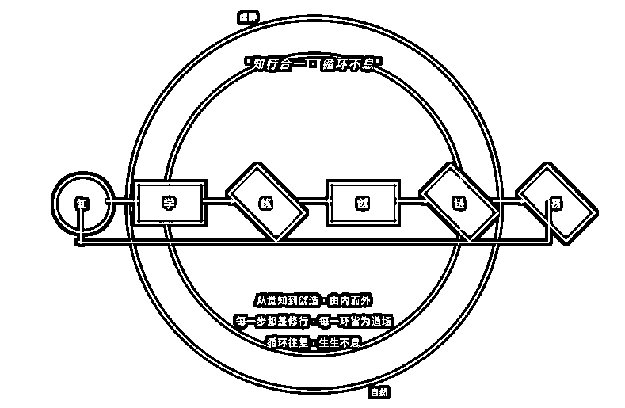
左手学习，右手生产链接。
2025 年，我觉得 AI 与知识社群的结合将迎来爆发期。
据微软 2025 年 AI 趋势报告预测，AI 驱动的智能体将拥有更高的自主性执行任务，
并深入到工作与生活场景中。AI 不再是简单的工具，而是成为人们学习和工作的重要伙伴。
我已经看到生财有术在 AI 能力建设上的积极动作：
这些功能不仅让学习更高效，更重要的是，它们正在重塑我们获取和应用知识的方式。
未来，AI+优质社群的组合将带来三大变革：
回顾过去近一年来时的路，最大的收获不是技术，不是项目，而是一种学习方法和思维模式。
AI+优质信息源的组合让我明白：胜出的不是拥有最多信息的人，而是能最有效处理信息并转化为行动的人。
这种能力是一种元能力，会随着时间推移产生复利效应。
今天你比别人快 10%，一年后可能就是 100%，三年后可能就是 1000%。
我想送给大家一句话：工具会迭代，平台会更替，但学习的能力和行动的习惯将伴随你终生。
AI 觉醒思考，方得始终。
最后，推荐一下生财有术。
一个稀缺的高质量的、可实操的信息源。